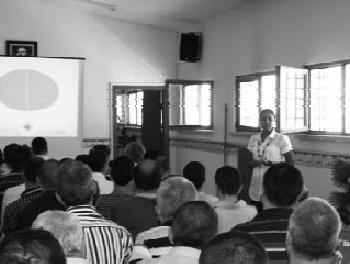

Gittiğimiz yerlerde yarattığımız "Uğur Böceği Etkisi"nin sonuçlarını düşününce, sahip olduğum mutluluk ve huzuru ifade etmekte kelimeler yetersiz kalır. Bunun yanında hayata ve olaylara bakış açımı değiştiren, kendimi bulduğum muhteşem bir projenin içerisinde olduğumu düşünüyorum. (Merve Işıl Kaya)
2010 mayısı. Merve atladı, Diyarbakır'a ve Urfa'ya gitti. 11 ayrı konferans verdi okullarda. Aslında tatil zamanıydı. Arkadaşları finallerden çıkıp evlerine tatile giderlerken Merve güneydoğuya eğitim vermeye gitti. Bu işten para kazanmıyor, belki cebinden de harcıyor ve koşturuyor oralara. Biz senin hakkını nasıl öderiz Merve, bilmiyorum. En fazla şöyle yanaklarını içten bir sıkmak istiyorum. Sağ ol dostum.